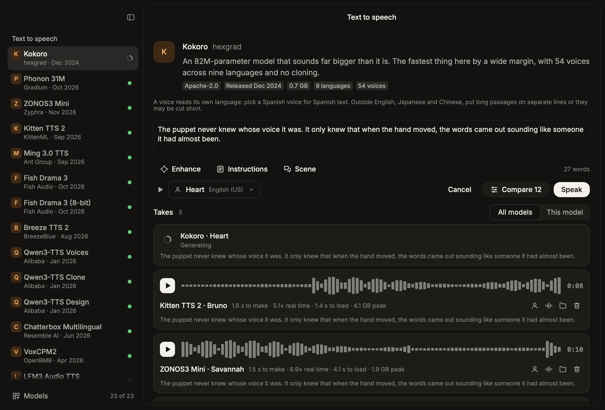
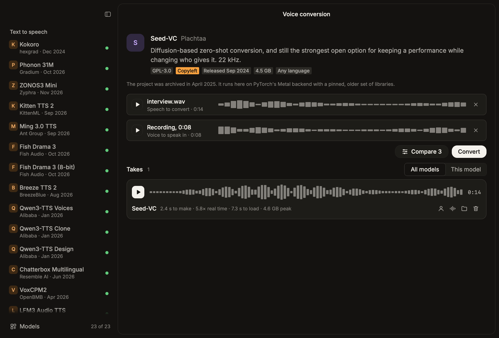
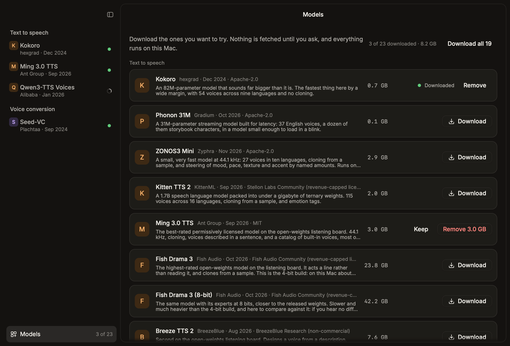
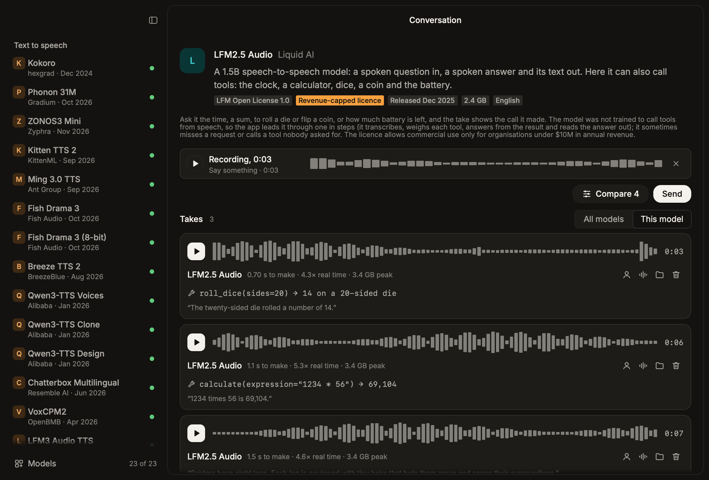
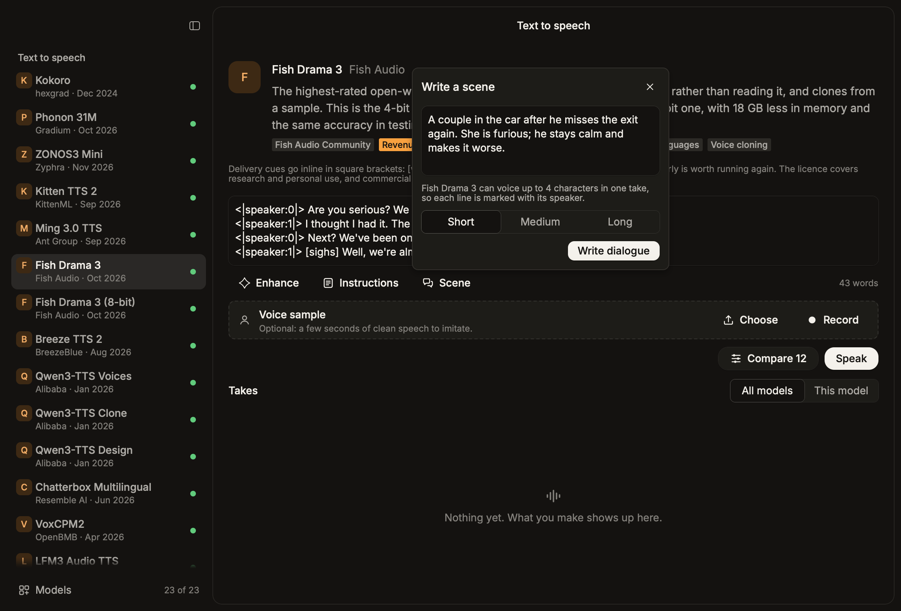

Open voice models, on your Mac
Type a line. Hear every model say it.
Ventriloquist is a native Mac app for trying open-source voice models side by side: text to speech, voice cloning, voice conversion and spoken conversation. Everything runs on your Mac, and nothing leaves it.
Free and open source. Requires a Mac with Apple silicon.

Voice to voice
Clone a voice from a few seconds, or re-voice a whole recording
Cloning models take a short sample. Conversion models keep the words and timing of a recording and change who is saying them. Use your own voice, or one you have permission to use.
- Record in the app or drop in a file
- Built-in voices for each model, with a preview before you commit
- Time to make, speed against real time and peak memory on every take

Download on demand
Nothing is bundled. You choose what to fetch.
The app itself is a few megabytes. Each model comes from Hugging Face when you ask for it, into its own environment, and leaves cleanly when you remove it. The Models page shows what each one weighs before you start.

Conversation
Ask out loud, and watch what it reaches for
Speech-to-speech models answer a recorded question in a voice of their own. Where a model can call tools, the take shows which one it called and what came back.
- Sophon Realtime 32B, ported here to run on Apple silicon
- LFM2.5 Audio with a clock, a calculator, dice, a coin and the battery level

Direction
Describe a scene and get the dialogue, marked up for the model that will speak it
A small local language model writes lines from your direction, or rewrites yours with the pauses, laughs and emotion tags the chosen voice model understands. Standing instructions shape every rewrite.

The catalog
Open-weights models that have a real path on Apple silicon, each installed and run before it was listed. Licences differ: several are free for any use, some are capped by revenue or limited to research, and the app shows which before you download.
| Model | Released | Download | Licence |
|---|
The full list is in the catalog file on GitHub.
Install
Download the installer
A signed disk image, checked by Apple, so it opens without a warning.
Drag it to Applications
Open the image and drop Ventriloquist on the Applications folder beside it.
Pick your models
Open the Models page and download the ones you want to hear. Start small: Kokoro is 0.7 GB.
Updates
The app checks for a new version once a day and offers it with its release notes. You can also ask from the menu: Ventriloquist › Check for Updates.
What it needs
A Mac with Apple silicon, plus uv and git for setting up model environments. Small models run in a few gigabytes of memory; the largest want far more, and the catalog says how much each downloads.
Privacy
Text, recordings and generated audio stay on your Mac. The network is used to download models and to check for updates.
Build it yourself
It is a Rust app on Rune. Clone the repository and run scripts/bundle --install.